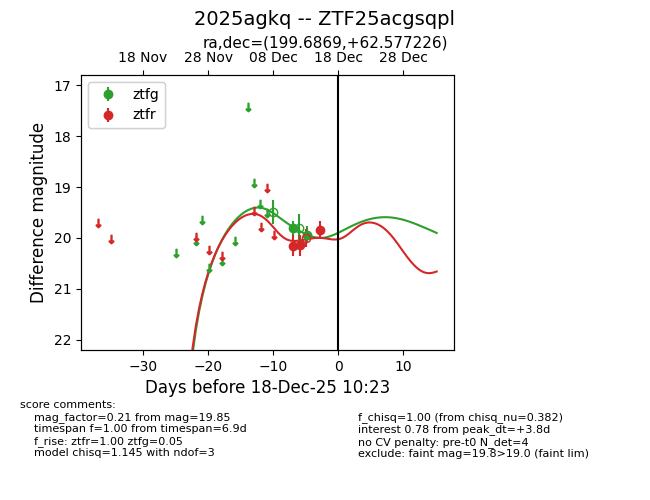
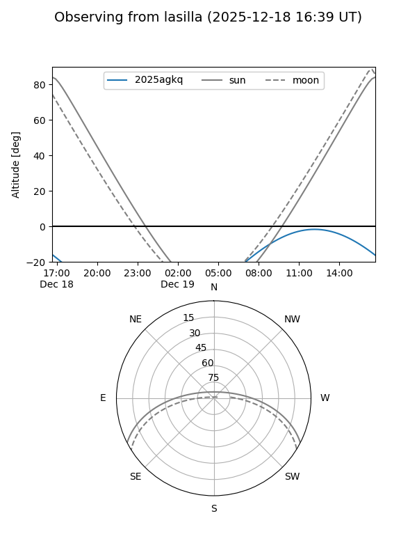
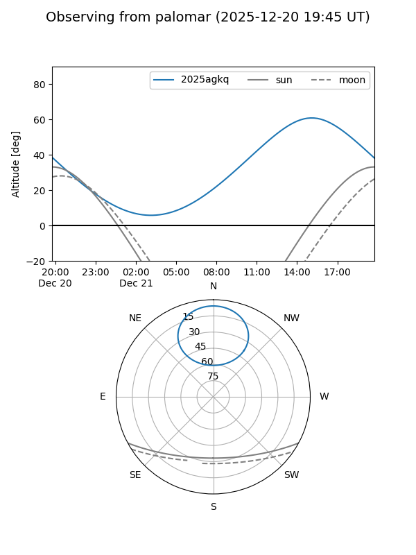
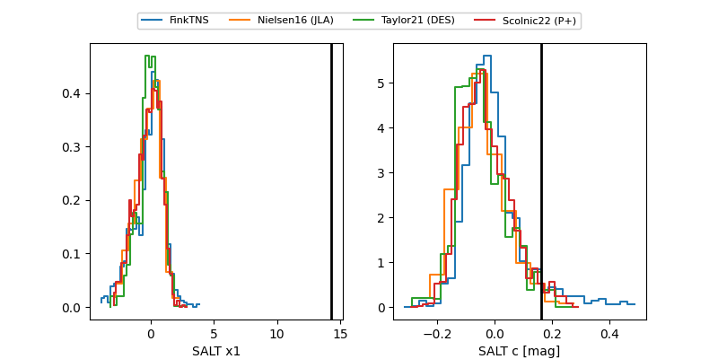

2025agkq
Target 2025agkq at 2025-12-21 14:37
Aliases and brokers:
FINK: fink-portal.org/ZTF25acgsqpl
Lasair: lasair-ztf.lsst.ac.uk/objects/ZTF25acgsqpl
ALeRCE: alerce.online/object/ZTF25acgsqpl
TNS: wis-tns.org/object/2025agkq
YSE: ziggy.ucolick.org/yse/transient_detail/2025agkq
alt names
ZTF25acgsqpl (ztf,fink_ztf)
2025agkq (tns,yse)
Coordinates:
equatorial (ra, dec) = 199.6869,+62.57723
equatorial (HMS+DMS) = 13:18:44.86,+62:34:38.01
galactic (l, b) = (117.5529,+54.26488)
Flags:
Photometry:
last ztfg=20.02, ztfr=19.86
5 ztfg, 6 ztfr detections
Lightcurve

Visibility


Additional plots
